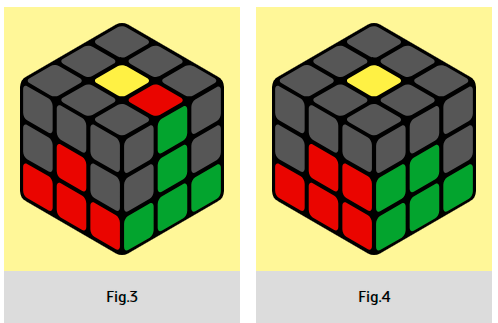

If you put the green-red edge to the green center (Fig. 3), we can see that the
edge this time goes to the left. So we will do U' L' U' LU ⇦ RU R' U'
➪ which means the cube is intercepted to the left. In our case, the red center will be in front
of us. In words, the formula will sound like this: left bang-bang, interception to the left,
right bang-bang.
|  |
The edge goes to the left
|